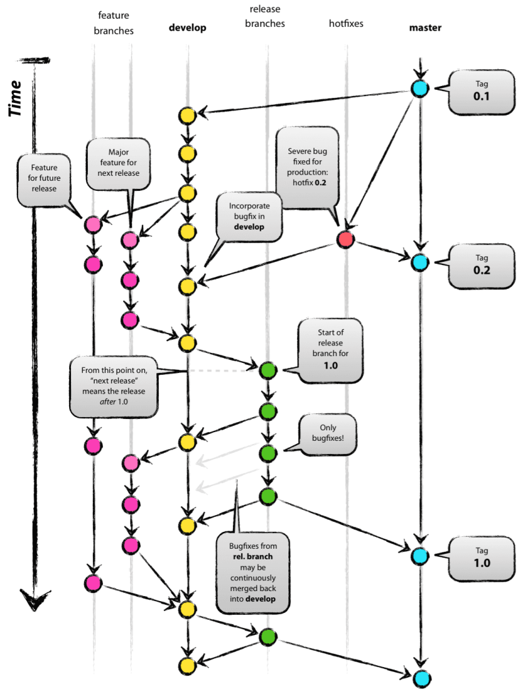

Contents area
Overview
GitFlow는 feature 브랜치와 여러 기본(primary) 브랜치를 사용하는 대안적인 Git 브랜치 모델이다.
feature 브랜치 외에도 release 준비, 유지관리 및 기록을 위해 개별 브랜치를 사용한다.
git-flow는 Vincent Driessen의 branching model을 적용해 고수준으로 저장소를 관리할 수 있게 해주는 확장 기능이다.
branching model은 feature - develop(dev) - release - hotfix - master 단계로 브랜치를 나눠 코드를 관리하는 전략이며 사용자가 쉽게 접근하고 사용할 수 있도록 확장 기능(명령어)을 제공하는 것이다.
git-flow에는 5가지 브랜치가 있다. 항상 유지되는 주요 브랜치들(master, develop)과 일정 기간 동안만 유지되는 보조 브랜치들(feature, release, hotfix)이 있다.
정리하면 깃 플로우는 프로그램이 아니라 개발자끼리 지키는 하나의 개발 원칙같은 것이다.
Branch
여기에 feature, release, master, develop, hotfix 브랜치 및 Git 태그가 있다.
GitFlow를 쓰면 feature, release, hotfix 브랜치 등 다른 브랜치가 develop으로 병합된다.
side branch에는 feature, release, hotfix branch가 있다.
- master : 제품으로 출시될 수 있는 브랜치
- develop : 다음 출시 버전을 개발하는 브랜치
- feature : 기능을 개발하는 브랜치
- release : 이번 출시 버전을 준비하는 브랜치
- hotfix : 출시 버전에서 발생한 버그를 수정 하는 브랜치

장점
승인된 개발자만 코드에 접근할 수 있게 해서 안전하게 소스코드를 관리할 수 있다
출시된 프로그램의 코드를 안전하게 수정, 병합할 수 있다
feature 브랜치, 풀 리퀘스트를 활용해서 새 기능 개발에 집중할 수 있다